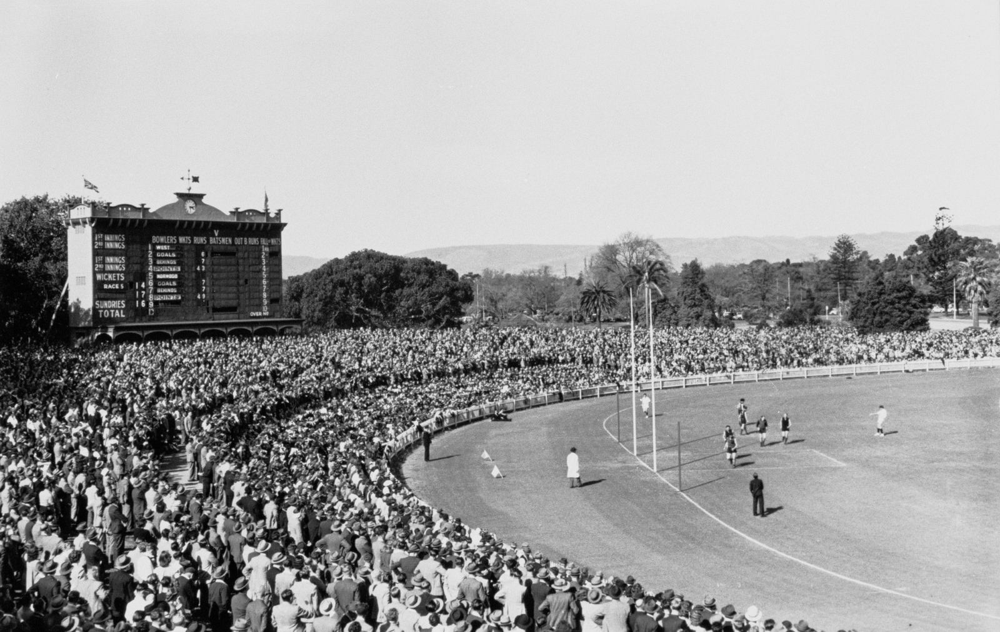
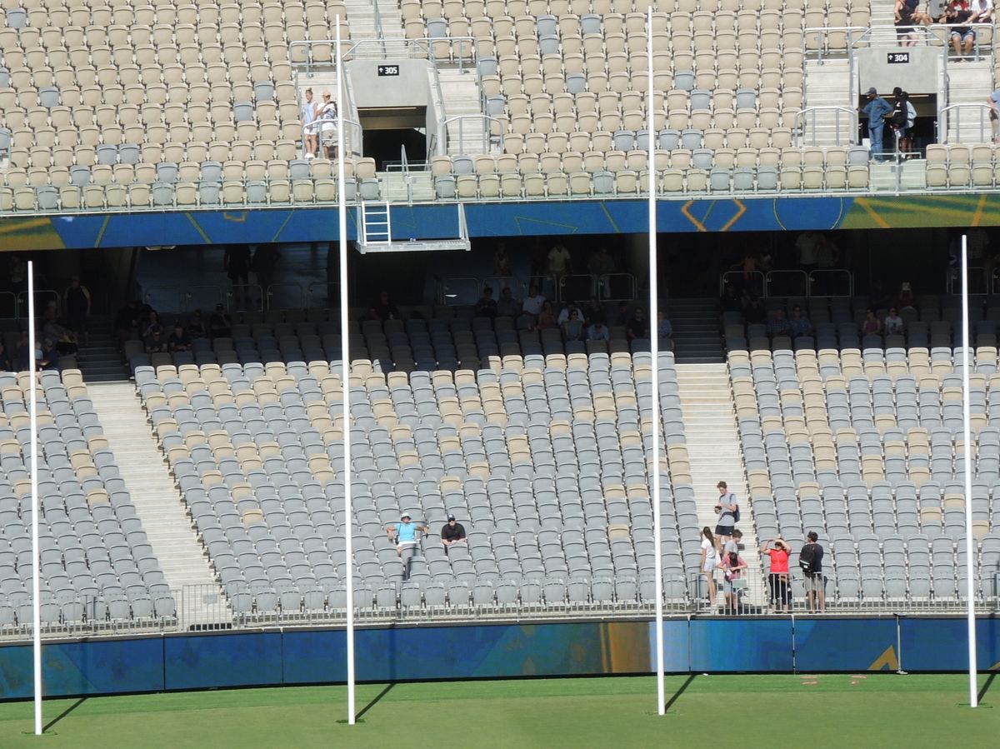

Mark Busani · Perth, Western Australia
Footy, explained by the numbers
Models you can try, check and argue with, plus commentary on what they say about the season.
Example · same chances, different result
Both sides had 22 scoring shots. The 20-point margin is all goalkicking. Read a score as goals.behinds (points): 14.8 (92) is 14 goals and 8 behinds.

.jpg){kind=link}
Three rules
How every piece worksShow the model
Every model has a page where you change the inputs and watch the maths move. Nothing is hidden behind a number.
Check the model
Each one publishes its own report card: how often its 70% calls came true, and where it goes wrong.
Tell the story
The numbers only matter for what they say about the season. Each model comes with commentary in plain words.
Models
In order of releaseDid they deserve to win?
Scoring shots, goalkicking luck and the 2026 upsets. Includes the luck-or-skill test.
AFLW: did they deserve to win?
The same model for the women's game, once a reliable source for goals and behinds is confirmed.
A-League Men and Women
A soccer version built on shots, for weekly reads through the AFL off-season.
About
I'm Mark Busani, an analyst in Perth working with SQL, Python and R. I'm studying the Barça Innovation Hub's Sports Analytics Postgraduate and starting an AFL analyst course in January 2027.
AFL Lab is where I build models in the open. Most footy sites tell you who will win. This one explains why results happen, shows its working, and says when the model is wrong.
Data and credits
Match scores come from the Squiggle API by Max Barry. The site uses only public match scores, never licensed player-tracking data. Code is MIT-licensed.

.jpg){kind=link}